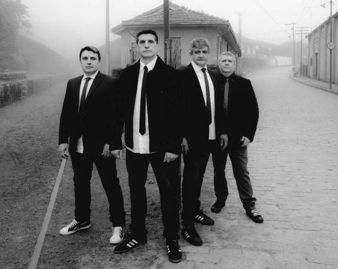

Resgate é uma banda brasileira de rock, formada por músicos cristãos, na cidade de São Paulo em 5 de maio de 1989, estando há três décadas ativa. É formada por Zé Bruno (vocal e guitarra), Hamiltom Gomes (guitarra), Marcelo Bassa (baixo) e Jorge Bruno (bateria). Apesar de iniciar suas atividades ainda no final da década de 80, despontou no meio cristão na década seguinte, época em que as bandas Oficina G3, Fruto Sagrado, Katsbarnea, Novo Som e Catedral davam força ao chamado movimento gospel.
Com mais de vinte anos de carreira, o Resgate viveu em 2010 um dos momentos mais populares de sua história com a entrada do conjunto no cast da Sony Music e o lançamento do elogiado Ainda não é o Último, que fez o grupo fazer uma série de shows. Mais tarde, Dudu Borges teve que deixar o grupo, que retornou a um som mais cru com Este Lado para Cima, de 2012. Nos anos seguintes, os músicos lançaram registros ao vivo e o trabalho No Seu Quintal, de 2017. O registro inédito mais recente do grupo é É Só Isso Aqui, previsto para 2020.
Em 1995 foi lançado On the Rock, gravado no Estúdio 43 e produzido por Paulo Anhaia. A sonoridade próxima ao hard rock e ao heavy metal fez com que a obra se tornasse, para alguns como o melhor trabalho do Resgate.
Em sua história, a banda emplacou hits no rock cristão brasileiro, e alcançando reconhecimento do público em suas indicações ao Troféu Talento e também no Troféu Promessas. Sua formação atual é a mesma que gerou o grupo.